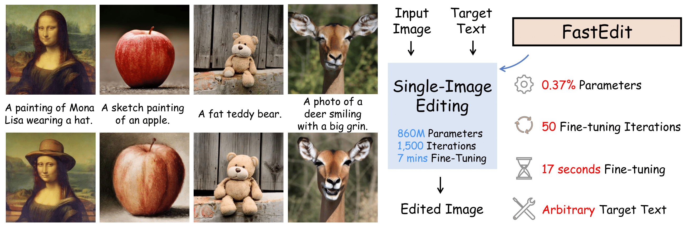
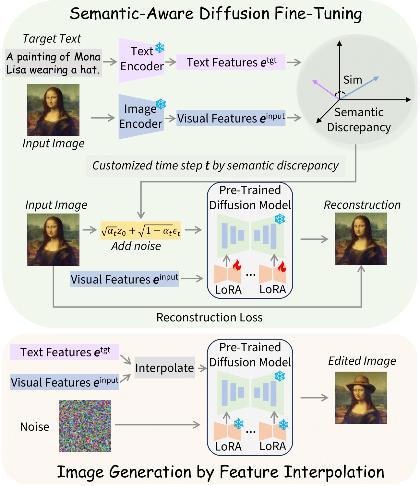
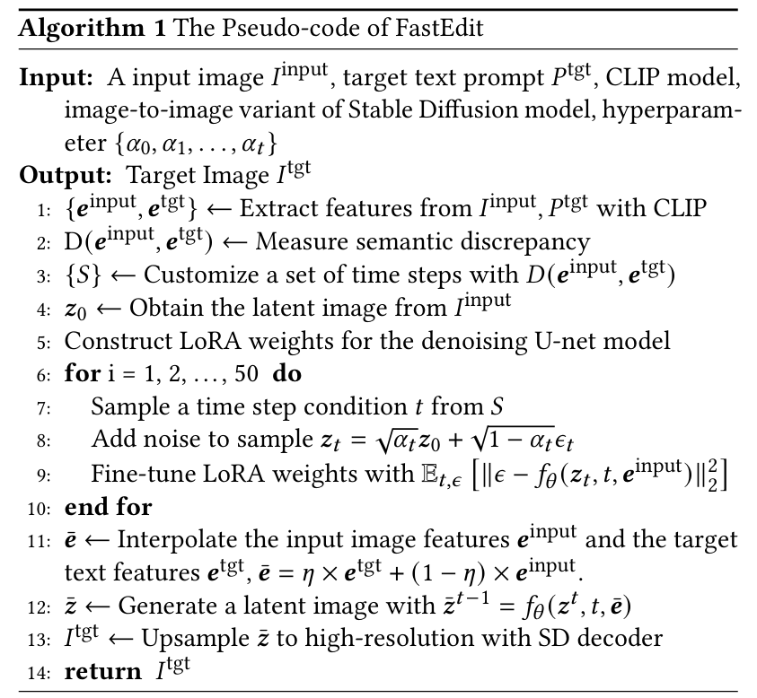

FastEdit: Fast Text-Guided Single-Image Editing via Semantic-Aware Diffusion Fine-Tuning

A fast text-guided single-image editing method, accelerating the editing process to only 17 seconds

A fast text-guided single-image editing method, accelerating the editing process to only 17 seconds
Text-guided single-image editing has emerged as a promising solution, which enables users to precisely alter an input image based on the target texts such as making a standing dog appear seated or a bird to spread its wings. While effective, conventional approaches require a two-step process including fine-tuning the target text embedding for over 1K iterations and the generative model for another 1.5K iterations. Although it ensures that the resulting image closely aligns with both the input image and the target text, this process often requires 7 minutes per image, posing a challenge for practical application due to its time-intensive nature. To address this bottleneck, we introduce FastEdit, a fast text-guided single-image editing method with semantic-aware diffusion fine-tuning, dramatically accelerating the editing process to only 17 seconds. FastEdit streamlines the generative model's fine-tuning phase, reducing it from 1.5K to a mere 50 iterations. For diffusion fine-tuning, we adopt certain time step values based on the semantic discrepancy between the input image and target text. Furthermore, FastEdit circumvents the initial fine-tuning step by utilizing an image-to-image model that conditions on the feature space, rather than the text embedding space. It can effectively align the target text prompt and input image within the same feature space and save substantial processing time. Additionally, we apply the parameter-efficient fine-tuning technique LoRA to U-net. With LoRA, FastEdit minimizes the model's trainable parameters to only 0.37% of the original size. At the same time, we can achieve comparable editing outcomes with significantly reduced computational overhead.
Our approach to single-image editing optimizes efficiency through semantic-aware diffusion fine-tuning, reducing training iterations to just 50 by matching time step values with the semantic discrepancy between the input image and target text. Additionally, we bypass the initial embedding optimization by employing an image-to-image variant of the Stable Diffusion model, which utilizes CLIP's image features for enhanced textual and visual feature alignment. Further, we incorporate Low-Rank Adaptation (LoRA), significantly reducing trainable parameters to only 0.37%, which effectively counters language drift issues common in other techniques and maintains high-quality outcomes.


FastEdit allows editing a single image using different target texts, demonstrating its versatility across various image types such as animals, scenes, humans, and paintings.

Quantitative Comparison to Baseline Methods
Compared to other baseline models, our method achieves similar-quality image editing in just 17 seconds.

Qualitative Comparison to Baseline Methods
FastEdit demonstrates the successful application of rapid text-based editing on a single real-world image while preserving the original image details

Conditional Feature Interpolation by Increasing 𝜂 Using a Consistent Seed

Various Editing Options with Random Seeds

Human Face Manipulation